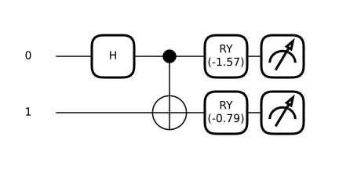

Station · correlation
Push the needle past 2
Two particles fly apart. Two detectors, set independently, far away from each other. Any universe where the answers were decided in advance is stuck below 2. Find the angle that gets you past it.
How far past the classical limit
The two detectors
S as you turn Bob's dial
Coincidence counts
| Setting | both + | + − | − + | both − | E |
|---|
Sampled, not calculated — so the numbers wobble exactly as a real experiment's would. Raise the shot count and the wobble shrinks.
Show the maths
The classical bound, from arithmetic alone. Suppose each particle carries instructions fixed when the pair was created, so Alice’s outcome is and Bob’s is . Consider one at a time:
Averaging over can only shrink a quantity bounded by 2, so every local hidden-variable theory obeys
No physics went into that — only the assumption that the answers existed before they were asked for.
What quantum mechanics predicts. Take the Bell state and let each analyser measure spin along a direction in the plane:
The Bell state has , and . Expanding the product:
Now put in the four settings. Each term is a correlation:
and is the most any quantum state can manage — Tsirelson’s bound. Nature sits strictly between “decided in advance” and “anything goes”.
What the dial does. Rotating both of Bob’s settings by turns every correlation into , giving . At that is exactly 2 — the classical bound, to the digit.

Hover or tap any gate to see what it does.
What this station is not. It is a simulation, so it cannot rule anything out. A real Bell test must close the detection and locality loopholes at the same time, first achieved in 2015 with detectors 1.3 km apart.
verify/test_reference.py.